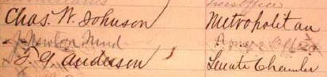
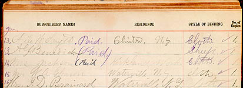

Identifying the AudienceMT felt that as a subscription author he reached a less sophisticated, more democratic audience than he would have if he had published his books in the trade and sold them through bookstores. On the other hand, the price of a subscription book, at least two or three times higher than trade novels, and thirty or forty times higher than a dime novel or a pirated newsprint edition of a foreign novel, suggests that his audience was still bourgeois. And agents were instructed to begin their canvass with the elite leaders of the communities they were working -- doctors, judges, ministers, and so on. There is still a lot to learn about who actually read MT in his times -- whether, for example, a "boys' book" like Tom Sawyer was in fact mainly read by boys. (Because of its price, it certainly wasn't bought by boys.) And there is some reason to think that subscription books may have had a larger percentage of male readers than non-subscription books. But one unique aspect of the subscription system is that each buyer of a text was identified by name and address. One could, presumably, get the names from a number of sales prospectuses for a particular MT book, identify the territory each agent worked, and through census and city records build up a demographic account of the kind of people who bought that book. In the meantime, if you're willing to decipher the agents' handwriting, you can get some idea of how much there is to learn from the sampling of orders here. The sales prospectus in the Barrett Collection with the most names in it is one for The Gilded Age (1873). This belonged to an agent whose territory included St. Paul, Minnesota. He or she sold 140 copies of the novel (as well as a couple orders for the previously-published Innocents Abroad and Roughing It). Most customers (111) chose the cheapest Cloth binding ($3.50). 27 chose Leather for $4.50. And Half-Turkey ($5.00) and Full Turkey ($8.00) had one buyer each. Only two of the 140 names are identified as "Mrs." Accessible here are four of the pages, containing about 80 names and addresses: |
|  |
|
Most prospectuses in Barrett have only a few names in them, but it seems as if all of the people in Middletown, New York, who bought Life on the Mississippi from the agent whose prospectus we have are listed; he sold fifty copies altogether. The two pages of orders for Huck Finn are from different prospectuses, and were taken by two different agents; the first seems to have been working Elmira, New York, where MT wrote much of the novel, and the second was canvassing south of Boston, in Hanover and North Pembroke, Massachusetts. The orders for Connecticut Yankee were all taken by the same agent, who was canvassing the towns of Clinton and Waterville, New York. |
|  |